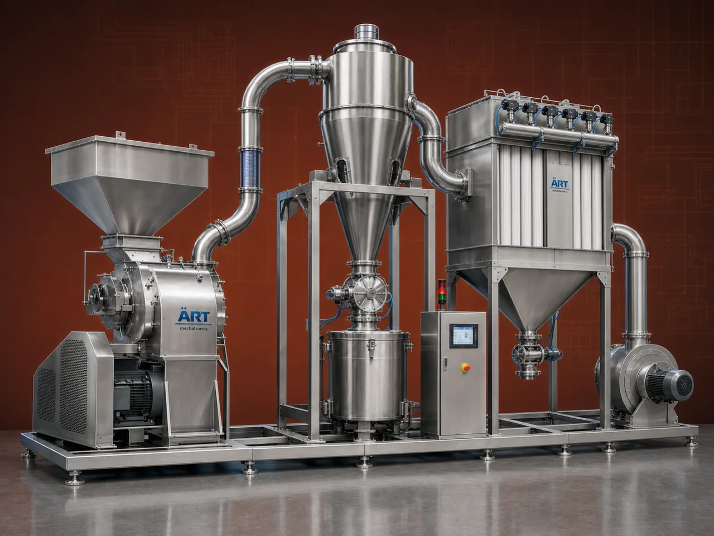

Pulverizer with Dust Collector (Integrated Grinding & Dust Collection System)
A Pulverizer with Dust Collector is an advanced integrated system that combines high-speed grinding with efficient dust extraction, ensuring clean, safe, and pollution-free operation during powder processing.

About the Pulverizer With Dust Collector
This system includes a pulverizer machine, cyclone separator, and dust collector unit, making it a complete solution for grinding, powder handling, and dust control in a single setup.
It is widely used in industries such as spices, food processing, pharmaceuticals, chemicals, agro products, minerals, and powder processing units, where maintaining product purity and dust-free environment is critical.
ART Mechatronics offers high-performance pulverizer systems with dust collection, designed for efficient grinding, maximum dust control, and compliance with industrial safety standards.
One machine, many names
Buyers search for this equipment under many terms — we manufacture all of them:
Working Principle of Pulverizer With Dust Collector
Raw material is fed into:
Inside the pulverizer:
Ground material is carried by air into:
Separates heavier particles
Fine dust is captured by:
Ensures dust-free operation
Final product is collected in:
Filtered air is safely released.
System Components
- Pulverizer Machine
- Grinding unit
- Cyclone Separator
- Pre-separation of particles
- Dust Collector
- Fine dust filtration
- Blower / Fan
- Air movement
- Ducting System
- Connects entire system
Industries Using Pulverizer With Dust Collector
🌶️ Food & Spice Industry
- Chili, turmeric, coriander
- Flour and food powders
💊 Pharma & Herbal Industry
- Medicines
- Herbal powders
⚗️ Chemical Industry
- Chemicals
- Pigments
🏗️ Mineral Processing
- Limestone
- Minerals
🍃 Agro Industry
- Feed
- Organic powders
♻️ Recycling Industry
- Powder materials
Features & Advantages
✔ Dust-free grinding operation ✔ Improved product quality and hygiene ✔ High grinding efficiency ✔ Integrated system (no separate setup required) ✔ Reduced pollution and health hazards ✔ Energy-efficient operation ✔ Compact and easy-to-install design
Technical Highlights
- Capacity: Custom (kg/hr to tons/hr)
- Grinding Type: Impact-based
- Dust Control: Cyclone + Dust Collector
- Construction: Mild Steel / Stainless Steel
- Automation: Optional PLC system
- Drive: Electric motor
Turnkey Pulverizing Solutions
ART Mechatronics offers:
- Complete pulverizing system design
- Integrated dust collection solutions
- Equipment manufacturing
- Installation & commissioning
- After-sales service & AMC
Why Choose Art Mechatronics
- Expertise in integrated grinding systems
- High-efficiency dust control solutions
- Customized plant-specific designs
- Durable and reliable machines
- Proven performance across industries
Applications
- Spice Processing Plants
- Food Processing Units
- Pharma Manufacturing Units
- Chemical Processing Plants
- Mineral Grinding Units
Related Size Reduction & Grinding machines
Get pricing & specs for the Pulverizer With Dust Collector
Share the product, target capacity, current process and plant location. These details help our engineers discuss the right machine or line configuration.
One partner, from design to start-up
ART Mechatronics designs, manufactures, installs and commissions your Pulverizer With Dust Collector solution with regional presence in India, UAE and Thailand.